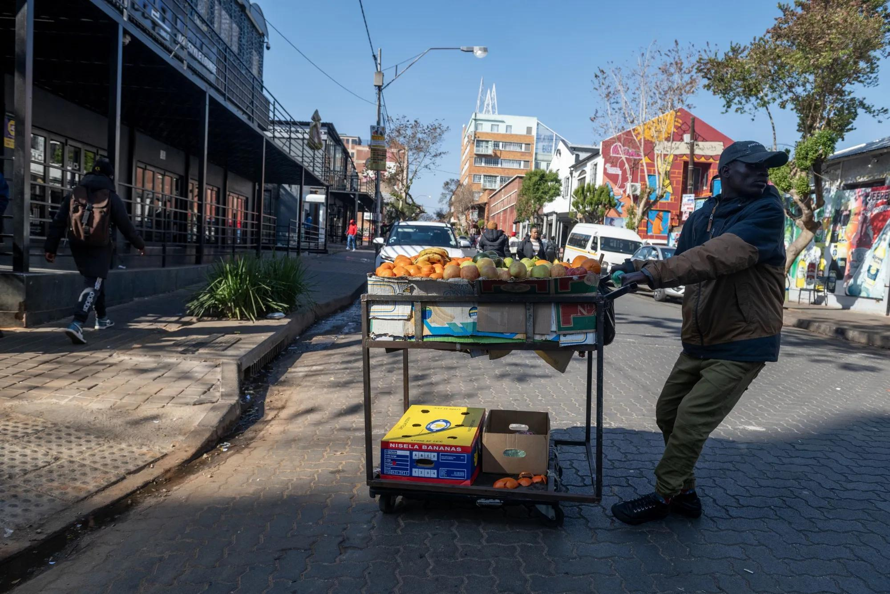

Verified evidence
≈16.3m
Gauteng population · 2026
Stats SA's 2026 mid-year population estimates place Gauteng at approximately 16.3 million residents.
Gauteng provides CIAS with a dense urban environment where corporate wealth, formal employment, informal enterprise, migration, youth unemployment, township economies and digital financial activity exist alongside one another.
The research question is not whether people outside traditional credit systems should automatically receive credit. It is whether repeated economic behaviour contains responsible, measurable and ethically usable information about financial reliability.
Gauteng is the strongest starting environment for examining how conventional and unconventional forms of economic participation overlap. It contains South Africa's largest urban economic concentration while simultaneously carrying substantial unemployment, informal activity and migration pressures.
Recent statistics should form the primary evidence layer. Older material is used only where necessary to explain historical development.
Stats SA's 2026 mid-year population estimates place Gauteng at approximately 16.3 million residents.
Gauteng remains under significant labour-market pressure despite being the country's dominant provincial economic centre.
National youth statistics provide an important structural comparison when considering Gauteng's large young urban population.
Exclusion remains severe even beyond the youngest labour-force category.
Gauteng contains roughly one quarter of South Africa's population while occupying a very small proportion of its physical land area. Johannesburg, Tshwane and Ekurhuleni therefore function as dense economic magnets for employment, education, migration, entrepreneurship and household survival.
Density itself does not create unemployment, but it intensifies competition for jobs, housing, transport, education and access to business opportunities.
A person may earn income in Gauteng while supporting relatives in Limpopo, Mpumalanga, North West, KwaZulu-Natal or another country. Their financial life therefore extends beyond their immediate location.
CIAS should investigate whether recurring obligations such as remittances represent financial stress, responsible obligation fulfilment, or a combination of both.

We should not describe South African unemployment as one permanently stagnant line from the early 2000s. The historical evidence is more complicated.
Stats SA reported unemployment of approximately 60.9% among people aged 15–24 and 40.6% among those aged 25–34 in Q1 2026.
These numbers should not be interpreted as young people themselves being the cause of unemployment. They indicate a system struggling to convert education, potential and population growth into economic participation.
CIAS research can examine whether the transition from education to work leaves young people economically invisible despite possessing skills, informal business activity or recurring income.
A separate education-policy investigation would be needed before claiming that South African schooling itself causes unemployment.
Where young people are primarily prepared to seek employment from large existing organisations, an economy may develop more job seekers than job creators.
This is a hypothesis to investigate rather than a conclusion.
CIAS may eventually help recognise credible economic activity among people building micro-enterprises before those businesses have conventional financial documentation.
Gauteng is not economically weak. That is precisely what makes its unemployment problem significant.
Johannesburg hosts the Johannesburg Stock Exchange and a large concentration of corporate headquarters, banks, technology businesses, professional services firms and multinational operations.
This creates significant economic output, but corporate concentration does not automatically produce broad participation across every community.
Earlier CIAS discussion referenced estimates suggesting roughly one third of JSE-listed equities may be held by non-resident investors.
Before formal publication, the ownership figure should be supported by a current primary financial-market source. The research value is the broader question:
How much locally generated corporate value translates into household-level financial opportunity?
The South African rand trades within global foreign-exchange markets and responds to domestic economic performance, inflation, interest rates, commodity cycles, investment flows and international risk conditions.
Currency weakness can increase imported input costs, fuel-related pressure and business expenses.
For a micro-business, what appears to be “unstable expenditure” may actually represent adaptation to changing input prices. CIAS must therefore avoid interpreting every form of volatility as poor financial behaviour.
Government has identified digital public infrastructure and digital transformation as important components of modernising state services and improving access.
The CIAS hypothesis is not that insufficient DPI alone caused unemployment.
Instead, inadequate interoperability between identity, payments, business records, education, government services and financial systems may make it harder for economically active people to demonstrate their participation.
CIAS should investigate whether better infrastructure can transform previously invisible activity into consent-based, interpretable financial evidence.
Gauteng contains economic behaviour that may be very real while still appearing weak or incomplete inside conventional documentation systems.
Food sellers, salons, repair businesses, retail stalls and very small service companies may trade continuously without producing conventional audited business records.
Delivery workers and e-hailing drivers may produce recurring digital transaction evidence while having income that changes from week to week.
Income may arrive from several households instead of a single employer, making a person's true economic continuity harder to describe using a conventional salary model.
Digital services, food businesses, clothing, beauty services, tutoring, repairs and creative work may begin informally before formal company infrastructure exists.
Economic activity can span municipalities, provinces and national borders, while conventional records describe only one part of the person's financial life.
A profitable cash-based activity may produce less digital evidence than a weaker business that uses electronic payment channels. CIAS must not automatically reward digitisation itself.
| CIAS concept | Possible observable behaviour | What we must not assume |
|---|---|---|
| Frequency | Repeated sales, deposits, supplier payments or recurring financial activity. | Frequent transactions do not automatically mean financial resilience. |
| Consistency | Economic activity continuing across weeks or months. | Stable-looking activity does not automatically predict debt repayment. |
| Volume | Total economic throughput. | Large turnover does not mean strong margins or affordability. |
| Longevity | Length of time a person or micro-business has remained economically active. | Longevity alone does not establish creditworthiness. |
| Growth | Increasing sales, customer activity, savings or business scale. | Rapid growth may also increase expenses and risk. |
| Repayment behaviour | Evidence of obligations being fulfilled repeatedly. | Informal repayments require careful verification and consent. |
| Network trust | Transaction relationships, supplier continuity or verified economic relationships. | Community opinion, popularity, ethnicity or social status cannot become reputation scoring. |
Expenses: approximately R9,800
Remaining margin: approximately R200
Expenses: approximately R3,000
Remaining margin: approximately R3,000
| Population / environment | Possible signal | Possible meaning | Alternative explanation | Research risk |
|---|---|---|---|---|
| Township micro-enterprise | Repeated sales, supplier payments, restocking | Business continuity | High turnover but low profit | Overvaluing volume |
| Gig worker | Frequent platform income | Recurring economic activity | High fuel, vehicle or platform costs | Ignoring expense structure |
| Domestic worker | Several recurring household payments | Income continuity from multiple sources | Employment relationships may be unstable | Misreading fragmented income |
| Migrant / mobile worker | Income plus recurring remittances | Consistent obligation fulfilment | Household financial pressure | Punishing family support |
| Cash trader | Repeated stock purchases and observed business activity | Economic continuity | Limited auditable transaction data | Digital-data bias |
| Youth entrepreneur | Small recurring payments and customer growth | Emerging enterprise | Short operating history | Penalising new businesses |
What forms of recurring financial activity are observable among under-documented workers and micro-enterprises in Gauteng?
Does transaction frequency provide meaningful evidence of economic continuity?
How should irregular but recurring income be distinguished from genuinely unstable income?
Does transaction volume indicate resilience, or can it produce misleading conclusions?
Can longevity of economic activity contribute useful reliability information?
How should CIAS represent cash-based economic activity where digital evidence is incomplete?
How should remittances, dependants and shared financial responsibilities affect interpretation?
Do different forms of employment and enterprise require different CIAS interpretations?
How can CIAS distinguish financial instability from ordinary volatility in informal economic activity?
Which variables create the greatest risk of discrimination, exclusion or false classification?
CIAS must never turn poverty, township residence or low income into a negative character judgement.
Race, nationality, language, neighbourhood or migration status cannot become substitutes for financial behaviour.
Observing economic continuity does not by itself establish affordability or predict repayment.
Primary and recent resources should carry the strongest evidentiary weight. Historical material should be clearly treated as timeline evidence. Photographs used on this page are separately credited to their original Wikimedia Commons file pages and are not treated as research evidence.
| Resource | Research use | Classification |
|---|---|---|
| Stats SA — Mid-year Population Estimates 2026 | Gauteng population and provincial demographic context. | Current primary evidence |
| Stats SA — Quarterly Labour Force Survey Q2 2026 | Gauteng employment and unemployment statistics. | Current primary evidence |
| Stats SA — Youth labour-market statistics | Youth unemployment and labour-force exclusion. | Current primary evidence |
| Statistics South Africa — 2025 publication archive | Supporting recent national and provincial economic statistics. | Primary evidence archive |
| Worldometer — South Africa Population | Secondary population comparison only. | Secondary source |
| Presidency — Roadmap for Digital Transformation of Government | Digital public infrastructure and government transformation policy context. | Current primary policy evidence |
| South African Reserve Bank | Currency, financial stability and payment-system context. | Primary financial source |
Gauteng should determine whether CIAS can identify meaningful patterns of financial continuity across highly varied, mobile, informal, entrepreneurial and mixed-income urban environments.
The province should not be used simply to confirm the original CIAS scoring formula. It should challenge the formula.
If the evidence eventually shows that consistency, longevity, repayment behaviour or another variable matters more than transaction volume, the CIAS model should change accordingly.